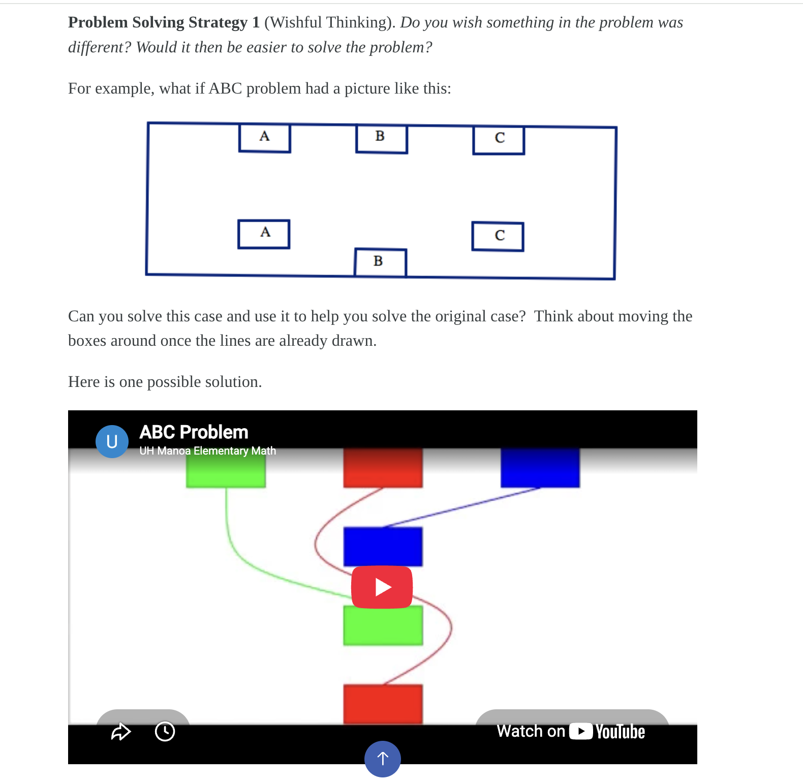
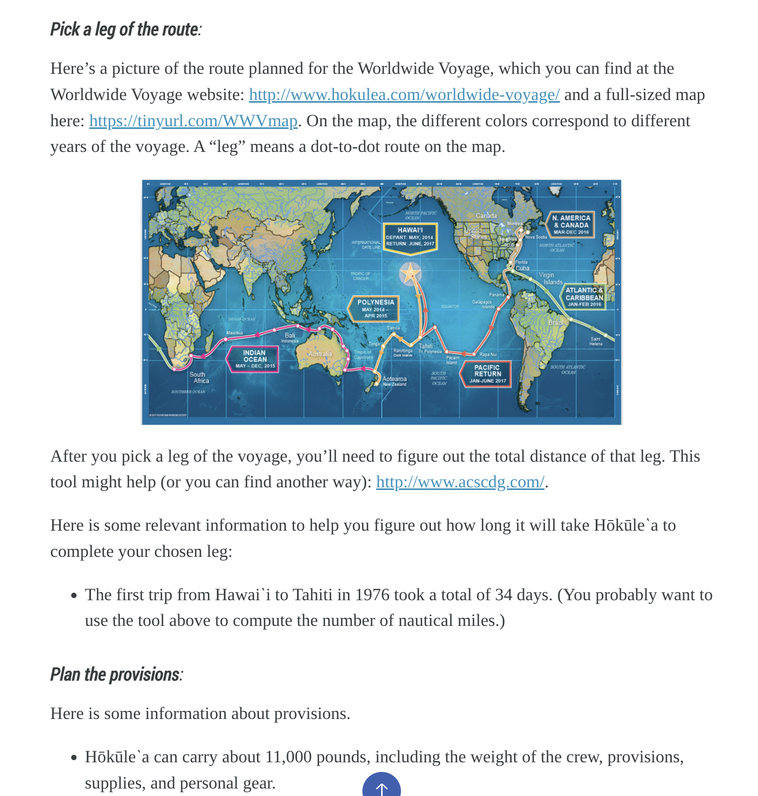
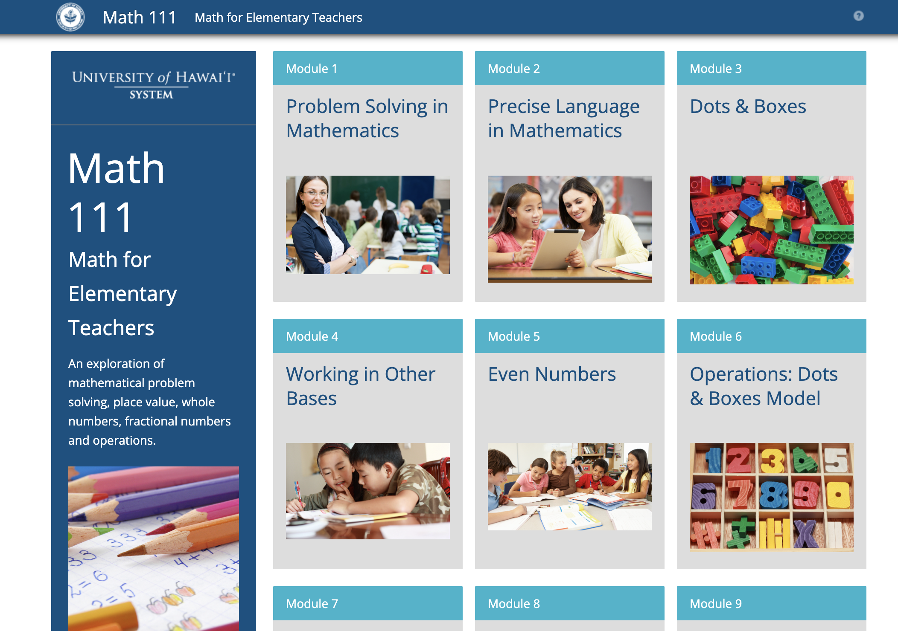
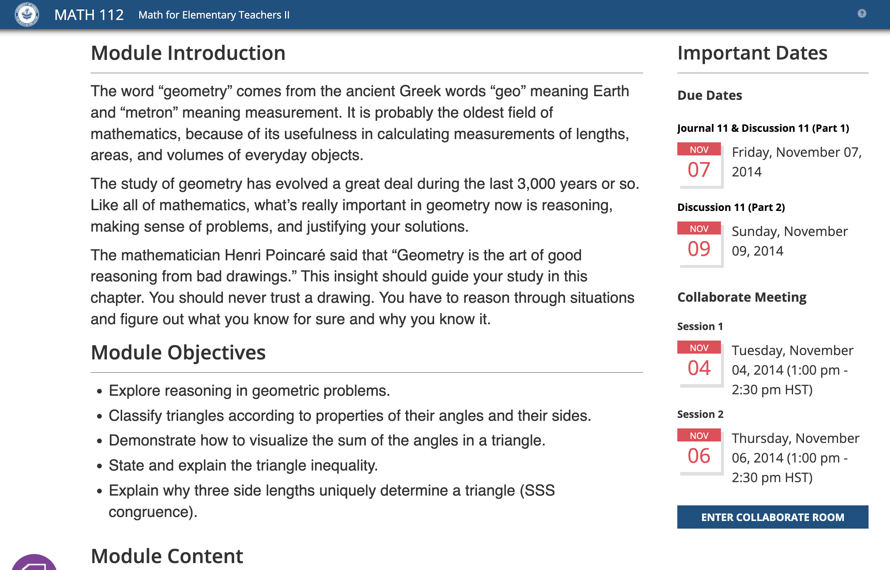
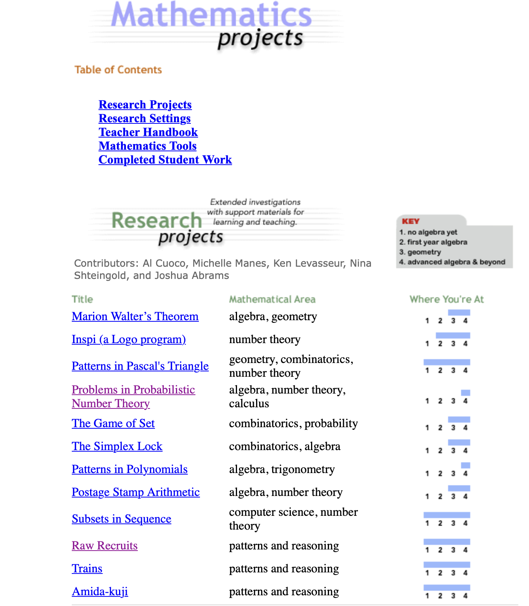
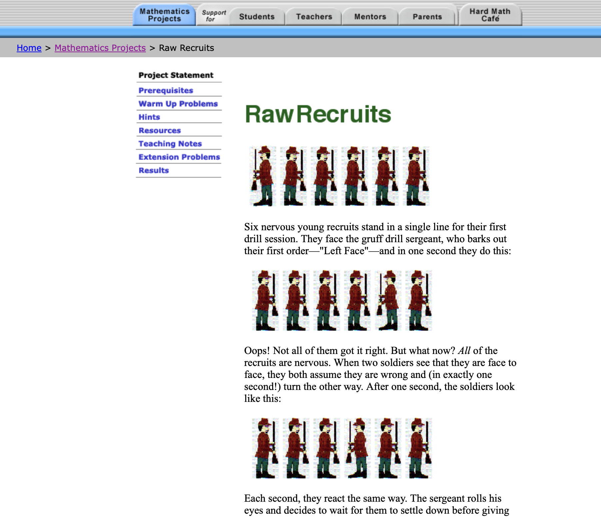
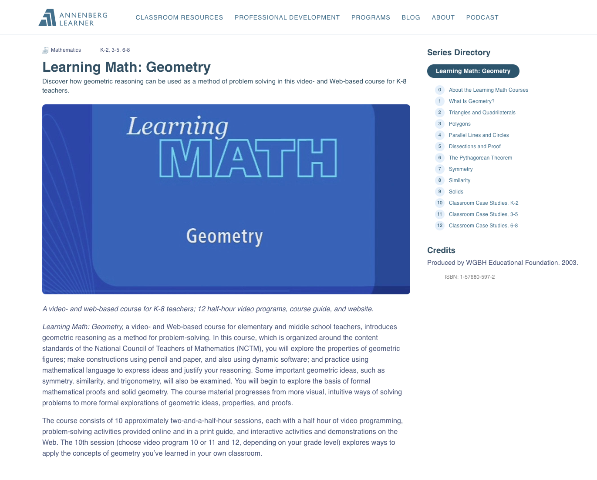
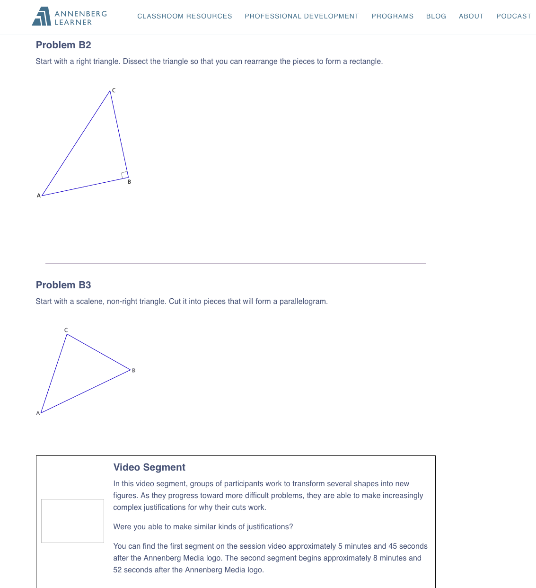
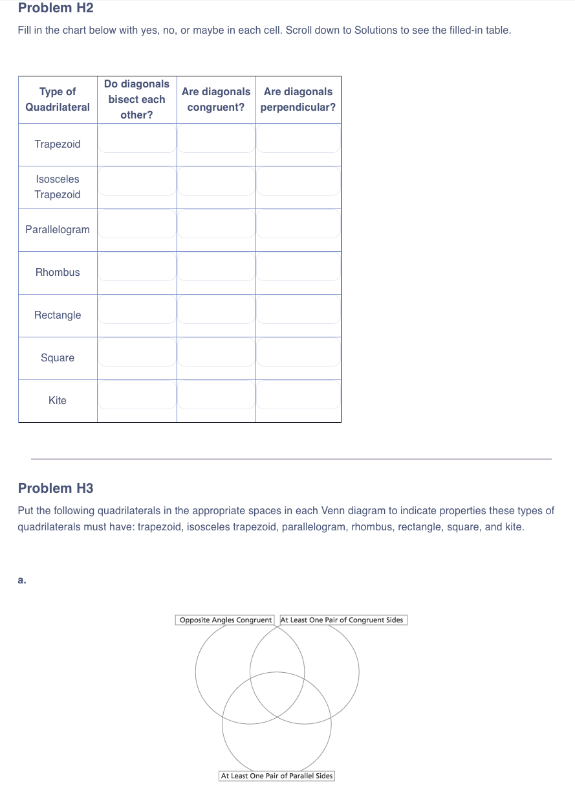
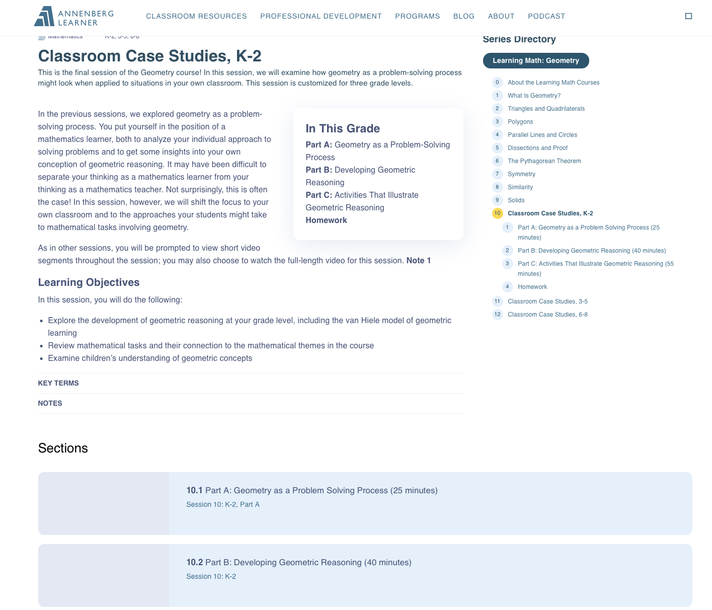

Content & curriculum — learning design across print, video, and the web.
For three decades I have built learning experiences for a wide range of audiences — K–12 students, pre- and in-service teachers, and college students — across print curricula, multimedia video courses, open educational resources, and interactive online environments. A few pieces I’m proud of are showcased below.
Open educational resource · online course
An open, freely licensed textbook I wrote (CC BY-SA, 2018) for the two-semester mathematics-content course future elementary teachers take. I redesigned the sequence from scratch through iterative feedback with the College of Education and students, then worked with the university’s Distance Course Design & Consulting team to turn it into a fully online course so students on Hawai‘i’s outer islands could take it at a distance.
OER textbook Online course — Math 111 Online course — Math 112




Interactive online program · grades 7–12
An online program that matched middle- and high-school students and their teachers with professional mathematicians to mentor open-ended mathematics research projects. I was a project director and part of the author team, building the research projects and the supporting materials — warm-up problems, hints, and extensions — for students, teachers, and mentors. NSF-funded; an Education World award winner; still online today.


Multimedia video-and-web course · teacher PD
A video-and-web professional-development course teaching geometry to K–8 teachers, produced for Annenberg/CPB. I developed the course, combining broadcast-quality video with web-based problem sets and interactives. It was distributed nationally for more than two decades. Annenberg Learner was permanently retired in 2026; a rebuilt archive of the course is linked here.



